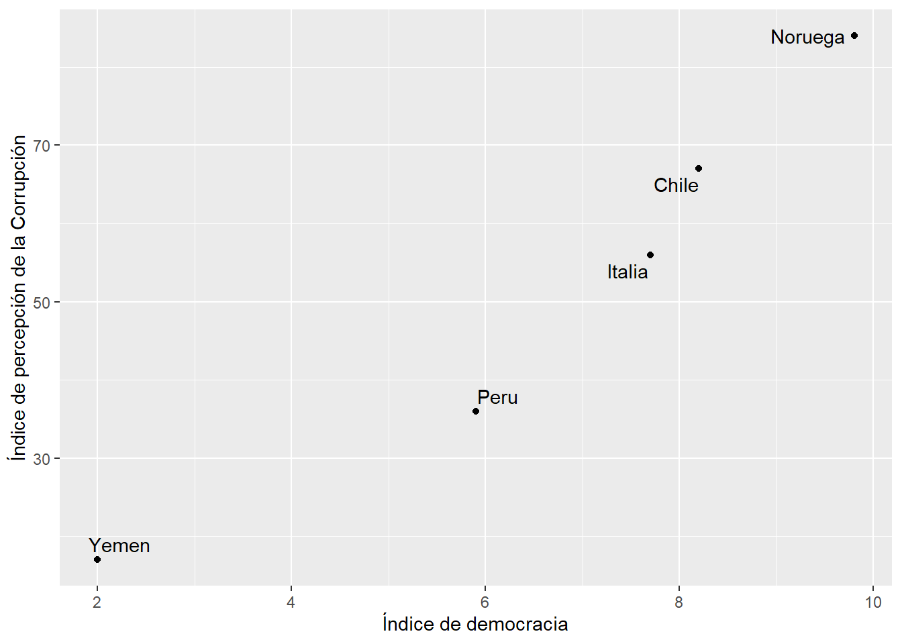
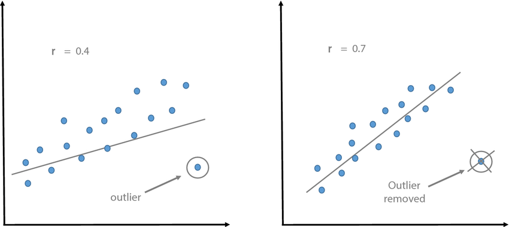

Explorar la relación entre dos variables numéricas. Específicamente vamos a entrar a una primera parte que es crucial para entender los temas posteriores, la cual consta de: 1) identificar si existe una relación lineal y reconocer el porqué y 2) medir la magnitud de esa relación.
8.2 Identificar correlación entre dos numéricas
8.2.1 Plano cartesiano y diagrama de dispersión
El plano cartesiano es un sistema de coordenadas que se utiliza para representar y visualizar puntos en un espacio bidimensional.
Está compuesto por dos ejes perpendiculares, el eje horizontal o eje de las abscisas (X) y el eje vertical o eje de las ordenadas (Y).
Estos ejes se cruzan en un punto llamado origen, que se representa con las coordenadas (0,0). Cada punto en el plano cartesiano se representa mediante un par ordenado (x, y), donde x indica la posición horizontal del punto a lo largo del eje X y y indica la posición vertical del punto a lo largo del eje Y.
El plano cartesiano proporciona un marco de referencia visual que facilita la representación gráfica de datos, funciones matemáticas, relaciones y patrones geométricos, permitiendo el análisis y la interpretación de información en el contexto bidimensional.
8.2.2 Visualizando la fuerza y dirección de una relación lineal
Vamos a visualizar la relación lineal que existe entre dos variables numéricas: democracy y corruption.
pais democracy corruption
1 Noruega 9.8 84
2 Chile 8.2 67
3 Italia 7.7 56
4 Peru 5.9 36
5 Yemen 2.0 17
Ahora lo visualizamos en un diagrama de dispersión, donde cada caso está representado por un punto en el plano:
library(tidyverse)
Attaching core tidyverse packages tidyverse 2.0.0
dplyr 1.1.4 readr 2.1.5
forcats 1.0.0 stringr 1.5.1
ggplot2 3.5.1 tibble 3.2.1
lubridate 1.9.3 tidyr 1.3.1
purrr 1.0.2
Conflicts tidyverse_conflicts()
✖ dplyr::filter() masks stats::filter()
dplyr::lag() masks stats::lag()
Use the conflicted package (<http://conflicted.r-lib.org/>) to force all conflicts to become errors
library(ggrepel)data |>ggplot()+aes(x=democracy, y=corruption, label=pais)+geom_point() +geom_text_repel()+labs(x="ndice de democracia", y="ndice de percepción de la Corrupción")

De manera preliminar, podemos preguntarnos sobre la fuerza de la relación lineal.
¿Los puntos que vemos en el plano forman una línea? Mientras la línea sea más clara, diremos que la relación lineal será alta En cambio si vemos una línea difícilmente, o simplemente no se nota, podríamos decir que la relación lineal es baja.
Ahora bien, no todas la relaciones tienen el mismo sentido. En algunos casos, una variable aumenta cuando la otra aumenta, en otros, una variable aumenta cuando otra disminuye (o viceversa). Entonces:
¿Una variable aumenta mientras la otra aumenta? Estamos frente a una relación positiva o directa.
¿Una variable aumenta mientras la otra disminuye? Estamos frente a una relación negativa o indirecta.
8.2.3 Coeficiente de correlación de Pearson
La correlación es una medida estadística que describe la relación o asociación entre dos variables. Indica la fuerza y la dirección de la relación lineal entre las variables y se mide a través de un coeficiente denominado coeficiente de correlación de Pearson.
El coeficiente de Pearson se llama así en honor a Karl Pearson, un estadístico británico que desarrolló este coeficiente de correlación en el siglo XIX. Karl Pearson fue una figura prominente en el campo de la estadística y realizó numerosas contribuciones a la teoría y aplicación de métodos estadísticos.
Para ello, se utiliza la siguiente fórmula:
[ r = ]
El coeficiente puede tomar los valores en el rango de -1 a 1. Con este podemos identificar dos caracterìsticas de la relación:
FUERZA: Mientras el valor del coeficiente se aleje más del 0 (sea más grande como valor absoluto) ello indicará una mayor correlación entre las dos variables numéricas.
DIRECCIN: Cuando el coeficiente tiene signo positivo, ello indicará que la relación tiene sentido directo, es decir, mientras una variable aumenta, la otra aumenta. Si el signo es negativo, mientras una variable aumenta la otra disminuye.
EJEMPLOS:
Cuando el coeficiente de correlación es 1, existe una correlación positiva perfecta, lo que significa que a medida que una variable aumenta, la otra variable también lo hace de manera proporcional.
Cuando el coeficiente de correlación es -1, hay una correlación negativa perfecta, lo que implica que a medida que una variable aumenta, la otra variable disminuye de manera proporcional.
Si el coeficiente de correlación es cercano a 0, indica una correlación débil o inexistente entre las variables, lo que significa que no hay una relación lineal clara entre ellas.
Ahora bien, normalmente no es común obtener -1, 1 o 0, sino diversos valores. Para ello, nos puede servir la escala de Cohen, la cual proporciona una escala para identificar un valor numérico con una magnitud de la correlaciòn. No obstante, esta es referencial, será común encontrar otras escalas dependiendo del campo de estudio.
Es decir, para nuestro caso, aplicaríamos lo siguiente:
Entonces, para nuestro ejemplo podemos identificamos la siguiente correlación entre democracy y corruption en los países analizados:
cor(data$democracy, data$corruption)
[1] 0.9692606
¿Cómo deberíamos interpretarlo?
Tip
Siempre identifica el valor absoluto del coeficiente. Eso te ayudará a interpretarlo mucho más rápido.
8.2.4 Prueba de hipótesis
La prueba de hipótesis en la correlación se utiliza para evaluar si existe una relación significativa entre dos variables continuas. Permite determinar si la correlación observada en una muestra es estadísticamente diferente de cero, lo que indicaría que existe una asociación entre las variables en la población subyacente.
En términos más específicos, la prueba de hipótesis en la correlación se basa en el coeficiente de correlación de Pearson (r) para evaluar si la correlación en la muestra es significativamente diferente de cero. Se establecen una hipótesis nula (H0) que asume que no hay correlación en la población, y una hipótesis alternativa (H1) que sugiere que hay una correlación significativa.
Al realizar la prueba de hipótesis, se calcula un valor de prueba (generalmente t o z) y se compara con un valor crítico basado en el nivel de significancia elegido. Con esa comparación, se concluye que hay evidencia suficiente para afirmar que existe una correlación significativa entre las variables.
Debemos plantear las hipótesis nula y alternativa.
Hipótesis
Descripción
Hipótesis nula
No existe correlación lineal
Hipótesis alterna
Sí existe correlación lineal
Estamos trabajando a un 95% de confianza, por lo que nuestro nivel de significancia será 0.05.
\[\alpha = 0.05\]
Para calcular la prueba de hipótesis utilizamos la función cor.test y vemos el p-valor:
cor.test(data$democracy, data$corruption)
Pearson's product-moment correlation
data: data$democracy and data$corruption
t = 6.8234, df = 3, p-value = 0.00644
alternative hypothesis: true correlation is not equal to 0
95 percent confidence interval:
0.6005652 0.9980492
sample estimates:
cor
0.9692606
Tenemos los siguientes escenarios
Resultado
Decisión
\(p-value <=\alpha\)
Rechazamos la hipótesis nula.
\(p-value >\alpha\)
No rechazamos la hipótesis nula.
Habíamos escogido un \(\alpha = 0.05\) por lo que al obtener un p-valor de 0.00644 rechazamos la hipótesis nula de que no existe correlación lineal en las variables elegidas.
Luego de realizar una prueba de correlación, a un 95% de confianza, obtuvimos un p-valor de 0.00644, por lo que rechazamos la hipótesis nula de que existe correlaicón entre el nivel de percepción de la corrupción y el índice de democracia. Por ello, concluimos que sí una correlación estadísticamente significativa en las variables indicadas.
Advertencia
¡Cuidado! Un error muy común es confundir el p-valor obtenido con el coeficiente de correlación. Recuerda que el coeficiente me sirve para cuantificar fuerza y dirección, mientras que el p-valor me sirve para ver si es significativa estadísticamente (en la población).
8.3 Consideraciones importantes
8.3.1 Correlación no implica causalidad
El principio de correlación no implica causalidad es un concepto fundamental en estadística y metodología de investigación que establece que el hecho de que dos variables estén correlacionadas entre sí no significa necesariamente que exista una relación causal directa entre ellas. En otras palabras, solo porque dos variables muestren una asociación estadística, no se puede concluir automáticamente que una variable cause los cambios en la otra.
Un ejemplo comúnmente citado para ilustrar este principio es la relación entre el consumo de helado y el número de casos de ahogamiento en piscinas. Estos dos fenómenos pueden estar correlacionados, es decir, puede haber una asociación estadística entre ellos. Durante los meses de verano, tanto el consumo de helado como el uso de piscinas aumentan. Por lo tanto, si se analizan los datos, es posible encontrar una correlación positiva entre la cantidad de helado consumido y el número de casos de ahogamiento en piscinas.
Sin embargo, sería incorrecto concluir que el consumo de helado causa los casos de ahogamiento en piscinas. En realidad, ambos fenómenos están influenciados por un factor común, que es la temporada de verano. El aumento en el consumo de helado y el uso de piscinas se debe a las altas temperaturas y el clima cálido propios del verano, y no a una relación causal directa entre ambas variables.
Este ejemplo ilustra cómo dos variables pueden estar correlacionadas sin que exista una relación causal entre ellas. Para establecer una relación causal, es necesario realizar estudios más rigurosos que consideren otros factores y utilicen diseños de investigación adecuados, como experimentos controlados o análisis de series temporales.
Te invito a que visites esta página web con un conjunto de correlaciones espurias interesantes:
https://www.tylervigen.com/spurious-correlations
Las correlaciones espurias pueden surgir cuando dos variables están relacionadas indirectamente a través de un tercer factor común, lo que crea la ilusión de una asociación directa entre ellas. Estas asociaciones pueden ser engañosas si no se consideran cuidadosamente los factores confusores o variables de control en el análisis.
8.3.2 Importancia de la visualización
Vamos a crear la siguiente data_ejemplo:
Ahora, utilizando data_ejemplo calcula el coeficiente de correlación entre la variable x e y y el p-valor de la prueba de hipótesis.
Discutan sus conclusiones.
Mientras que una prueba de correlación lineal, como el coeficiente de correlación de Pearson, mide la relación lineal entre variables, puede haber relaciones no lineales entre las variables. Un diagrama de dispersión permite observar patrones más complejos y no lineales, como relaciones parabólicas, curvas en forma de S u otras formas.
Advertencia
¡Cuidado! Si aplicamos un cor.test sin analizar previamente las variables podríamos llegar a conclusiones equivocadas.
El coeficiente de correlación de Pearson es una medida estadística que evalúa la relación lineal entre dos variables. Sin embargo, puede haber situaciones en las que exista una relación no lineal entre las variables, pero el coeficiente de Pearson aún pueda ser significativo y mostrar una correlación fuerte.
Un escenario es el ejemplo mostrado en el que existe una relación monótona. Una relación monótona es aquella en la que las variables aumentan o disminuyen juntas, pero no necesariamente de manera lineal. En estos casos, el coeficiente de Pearson aún puede mostrar una correlación fuerte porque refleja la tendencia general de las variables, a pesar de que la relación subyacente no sea lineal.
8.3.3 Valores extremos

La presencia de valores extremos en los datos puede afectar el resultado del cor.test y, en algunos casos, cambiar la interpretación de la correlación..
El coeficiente de correlación de Pearson, que se calcula mediante cor.test en R, es sensible a los valores extremos debido a su influencia en la covarianza entre las variables. Los valores extremos pueden distorsionar la relación entre las variables y afectar la magnitud y significancia del coeficiente de correlación.
Cuando se presentan valores extremos, existen algunas consideraciones a tener en cuenta:
Influencia en la magnitud de la correlación: Un valor extremo atípico puede tener un impacto desproporcionado en la correlación, especialmente si está alejado de la tendencia general de los datos. Dependiendo de la dirección y magnitud del valor atípico, puede aumentar o disminuir la correlación observada. Por lo tanto, es importante tener en cuenta que una correlación fuerte obtenida a partir de un cor.test puede ser influenciada por valores extremos.
Influencia en la significancia estadística: Los valores extremos pueden aumentar la varianza y la covarianza en los datos, lo que a su vez puede afectar la significancia estadística del coeficiente de correlación. En presencia de valores atípicos, el p-valor asociado al cor.test puede cambiar y volverse más o menos significativo, dependiendo del efecto de los valores extremos en la correlación.
Por lo tanto, es importante identificar y evaluar la influencia de los valores extremos en el análisis de correlación y considerarlos al interpretar los resultados. Si los valores extremos son atípicos y no representativos de la población o el fenómeno en estudio, se pueden considerar métodos alternativos de análisis, como el uso de técnicas robustas o el análisis de subgrupos sin los valores extremos.
8.3.4 Tamaño de la muestra
El tamaño de la muestra puede afectar la interpretación de la correlación. Las correlaciones pueden ser más confiables y representativas cuando se basan en muestras grandes en lugar de muestras pequeñas. Es importante considerar la confiabilidad estadística de la correlación al interpretar los resultados.
Ejercicio 1
En un estudio que busca profundizar en los factores relacionados con el porcentaje de inscripción escolar neta por país, se ha construido una base de datos con un conjunto de variables sociodemográficas a nivel mundial. Los investigadores tienen como objetivo explorar las relaciones entre estas variables, con la intención de que posteriormente el equipo de data science pueda elaborar modelos de machine learning (como los de regresión lineal).
matricula: Porcentaje de inscripción escolar neta por país
pbiPC: PBI per cápita por país
pobreza: Porcentaje de la población que se encuentra por debajo de la línea de pobreza por país
urbano: Porcentaje de la población urbana por país
gastoeducacion: Porcentaje de inversión del Estado en Educación por país
ratio_prof: Proporción de estudiantes con relación al número de maestros por país
alcohol: Porcentaje de jóvenes entre 15-19 años que son consumidores de alcohol por país
natalidad_ado: Tasa de natalidad adolescente (por 1000 mujeres de 15 a 19 años) pos país
Responda:
Nuestro interés es determinar si la matricula se relaciona con las otras variables identificadas. Explore gráficamente la relación entre matrícula y cada una de las otras variables.
Determine el coeficiente de correlación entre todas las parejas analizadas en el punto anterior. En dónde existe la mayor correlación y cuál es su dirección?
En cuáles de estas parejas existe correlación estadísticamente significativa